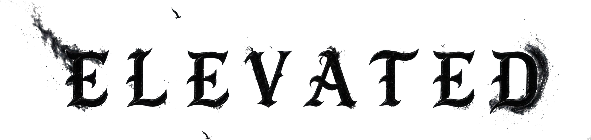

Step 01
EL
Entry Level
Learn, sell, grow.
- 1-on-1 coaching
- Warm leads
- Production bonuses

Above all else
A field sales organization for people who want more. Learn the work, build a team, run a division of your own.
The Ladder
Four ranks. Every step is earned through your own production and the team you build.
Step 01
Entry Level
Learn, sell, grow.
Step 02
Sales Team Leader
Build teams, duplicate systems, and scale.
Step 03
Sales Team Captain
Overrides, commission bonuses, and exclusive travel events.
Step 04
Junior Partner
Run multiple divisions of your own.
Divisions
Three live campaigns, each with its own route to the top. Pick the one that fits how you sell.
Live and hiring
Fiber, solar, alarms, pest, autoglass — anything at the door.
Join the TeamLive and hiring
Closing high-ticket peptide packages, fully remote with residual income. B2C and B2B.
Join the TeamLive and hiring
Remote sales for licensed producers. Active territories, taking reps now.
Join the TeamNot just a team. A lifestyle.
Our Movement
Elevated runs on five values. We hold each other to them on the job and off it.
Partners
The companies behind our campaigns.
Join the movement
Book InterviewQuestions? partners@joinelevated.net
Now hiring in Florida, Arizona, South Carolina and Georgia, and more states.